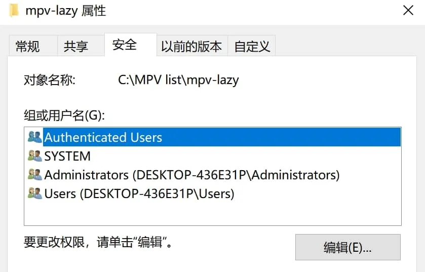
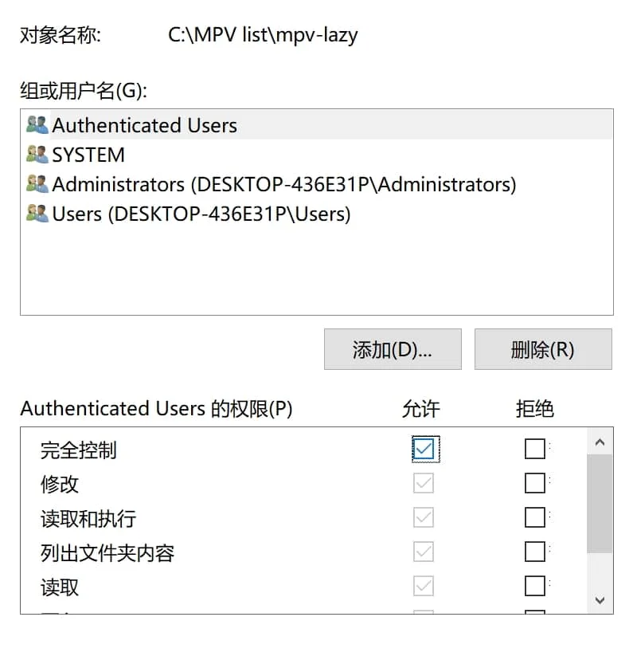
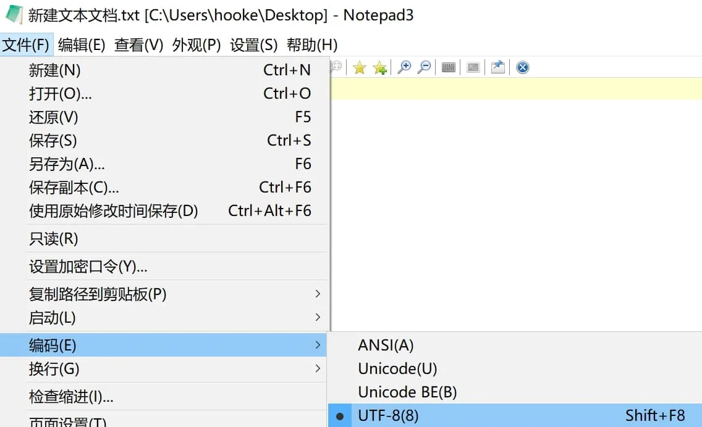
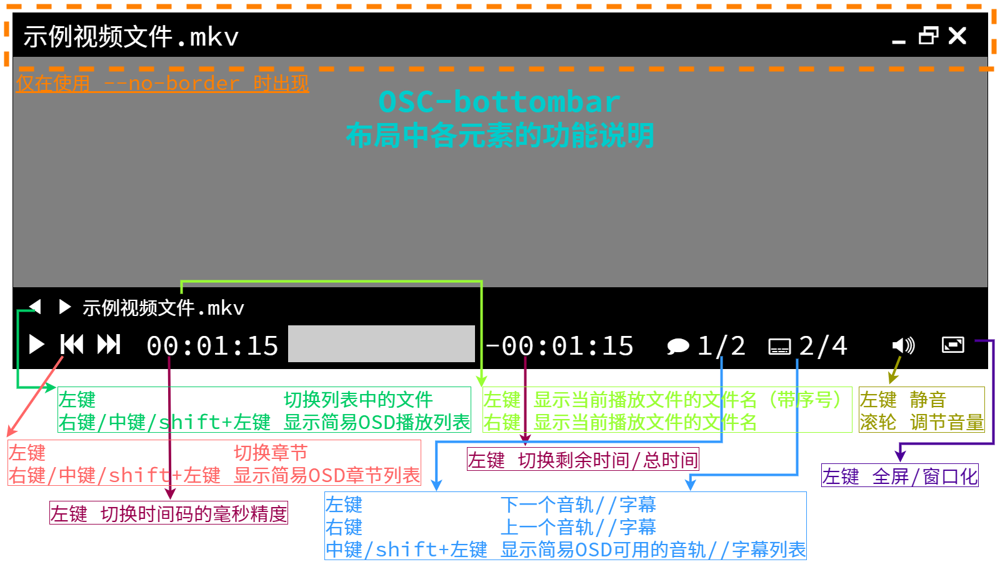
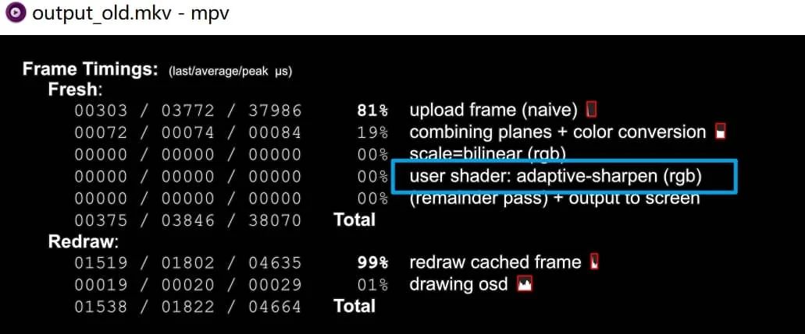
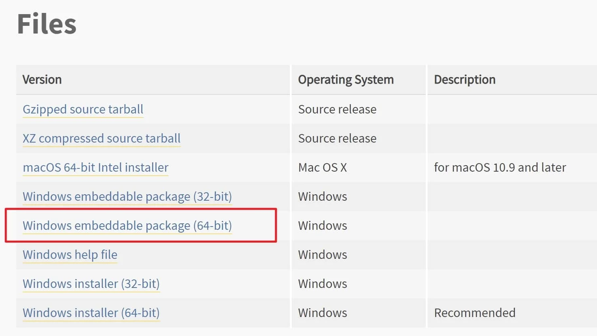
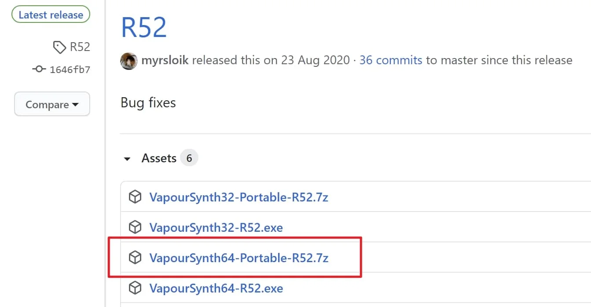
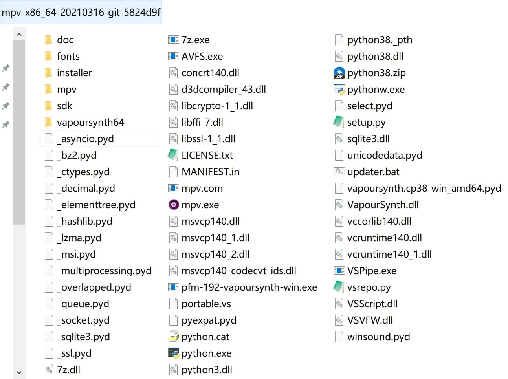

mpv播放器的使用引导#
ver.20220808
极短的介绍
mpv是极简设计的高画质的开源播放器。
与传统的PC高画质方案Directshow+（mpc+lavfilter+madvr+xysubfilter）不同，mpv是一整套的解决方案（单播放器解码渲染字幕齐活）（VLC的既视感？？？）。用户的不同用法决定了这个方案可以十分省事，也可以非常折腾。
…
本文的假定使用环境 win11-x64 Intel-CPU Nvidia-GPU
本教程独立，不从属于懒人包的文档，基于shinchiro编译并打包发布的版本撰写。
推荐使用的高级文本编辑器，完全可替代系统自带的记事本 Notepad3
mpv 播放器的使用【入门】#
既是入门，也是最省心的用法。
1.下载安装#
mpv目前没有官方编译的版本，第三方shinchiro编译的算公认的半官方版，在 SOURCEGORGE 或 他的仓库 获取64位最新版本：
全部解压至自定义目录，点击运行 mpv.exe ，拖入任意视频播放以快速测试兼容性。
如果需要注册成可选的默认播放器，以管理员权限运行 installer 文件夹内的 mpv-install.bat ，此后不要更改 mpv.exe 所在文件夹的路径或名称，否则需要重新执行该文件重新注册到系统。
🔺 出于兼容考虑，安置的路径里不要存在中文，最好为纯英文数字
出于将来省事可能性的考虑（见下章 【进阶】 ），mpv尽可能放在盘符根目录
2.更改权限（可选：视安置路径而定）#
进入后方的步骤前，先确保 mpv.exe 所在路径（及子文件夹）具有被完全读写的权限。
放在C盘目录的通常需要这一步
（文件夹右键）属性 → 安全 → 编辑 → 选择需要被授权的用户 → ☑允许
 
3.选项设置#
因为mpv本身不具有图形化前端，绝大多数的设置选项都是靠在主设置文件 mpv.conf 中输入参数实现的。
mpv的默认设置目录为 C:/Users/你的用户名/AppData/Roaming/mpv/
强烈建议你在 mpv.exe 的旁边新建一个 portable_config 的文件夹，该目录具有最高级的优先级，一旦存在此文件夹，其它所有的设置目录都会被忽略。
因此在 /portable_config/ 内新建一个 mpv.conf 的空文本，先确保文本编码为 UTF-8
即 X:/xxxxx/你的MPV文件夹/portable_config/mpv.conf

这两种设置目录的选择各有特点：
以 C:/Users/你的用户名/AppData/Roaming/mpv/ 为设置目录，相当于这是“全局设置目录”，不管你使用电脑里存放的多少个不同版本的mpv，都会自动读取这个设置目录
以 X:/xxxxx/你的MPV文件夹/portable_config/ 为设置目录，除去其具有最高优先级（会让其忽略“全局设置”）的特性，还赋予了软件绿色化的特性（查看 【进阶】 章可知大部分文件都可放在设置目录），非常适合便携党。
在 mpv.conf 中输入以下必要参数：
hwdec=d3d11va # 使用d3d11va硬解（原生模式）
hwdec-codecs=all # 尽可能所有格式先尝试硬解
#log-file="~~desktop/mpv.log" # 输出log日志在桌面
keep-open=yes # 播放完毕后不自动退出
save-position-on-quit=yes # 退出时保存当前播放状态
audio-file-auto=fuzzy # 自动加载同名外置音轨
#icc-profile-auto # 应用系统icc文件进行色彩修正
icc-cache-dir="~~/icc_cache" # 存储icc缓存以加速二次启动
#profile=gpu-hq # 使用内置的预设的较高画质方案
gpu-shader-cache-dir="~~/shaders_cache" # 存储着色器缓存以加速二次启动
sub-auto=fuzzy # 自动加载同名外置字幕
screenshot-directory="~~desktop/" # 截图的输出路径在桌面
辅助理解：
如何理解这样写的目的，某一行参数中如果有注释符号”#”，意味着该行 # 所在位置以后的内容为无效。
如果将这一行一行参数看作一个一个可以打勾的选项。则 hwdec=d3d11va 类似于 “☑使用d3d11va硬解” 激活该参数，反之 #hwdec=d3d11va 对应 “☐使用d3d11va硬解” 未勾选该选项（使用默认值）。
部分被注释掉的参数：
--log-file 用于输出日志查错，一般人用不到也看不懂
--icc-profile-auto 对于已经校色的用户应当开启，未校色的用户开启会产生色彩错误
--profile=gpu-hq 如果你的显卡不太差，可以使用这个内建的方案
🔺 由于主设置文件的书写规范最为宽松：
===你可以在参数后直接注释中文解释 hwdec=d3d11va # 使用d3d11va硬解（原生模式） ；
===也可以加大量空格美化参数的排版 hwdec = d3d11va # 使用d3d11va硬解（原生模式） ；
===还可以用 --hwdec=d3d11va 这种（不合规的）替代写法表示激活的参数；
===甚至其中 no-osd-bar 这类no-开头的参数可改成为 osd-bar=no；
===以及官方手册中没有赋值的参数比如 deband 可以写成 deband=yes （等效）。
4.高频快捷键#
上方必要参数输入完保存退出。再记住常用快捷键和界面控件作用：

1 2 调整对比度
3 4 调整亮度
5 6 调整伽玛
7 8 调整饱和度
9 0 调整音量
[ ] 调整播放速度
Backspace 重置播放速度
s 快速截屏
i 显示有关当前播放文件的统计信息
还有其它的 常用快捷键
入门教程到此结束。
mpv 播放器的使用【进阶】#
开始本章前，默认已读完入门章。无尽折腾之路，由此开启。
1.主设置文件细化#
最可靠的途径是直接看官方的最新手册： manual
为了降低难度和节省时间，我挑选了其中的一些参数并添加了 中文注释
由于涉及的文本量巨大，此处不赘述重复的内容。从自身偏好出发，个性化平衡适配你的需求和硬件。
2.快捷键自定义#
使用 input.conf 文件创建属于你自己的快捷键方案，该文件应和主设置文件 mpv.conf 位于同一级目录
查看 官方的内建方案 获得全部快捷键对应的功能；
同样我的 懒人包版的中文注释 也能降低上手难度。
即使你的 input.conf 文件不存在设置目录里（或为空文本），mpv依旧会使用内建的方案。
🔺 和主设置文件一样，input的书写规范也很宽松，参考我的中文注释版，你可以尽情美化排版便于阅读。
===你可以直接在 mpv.conf 内使用 --no-input-default-bindings 参数完全屏蔽内建的方案，从而省去逐个参数 ignore 依次屏蔽各个按键的步骤。
===（注意该参数同样会屏蔽外部脚本的初始快捷键方案，如果你不想外部脚本受影响，那么就使用另一个参数 --no-input-builtin-bindings ）
2.1.运行时更改设置#
这里以 set cycle 和 cycle-values 这三个命令快速举例。例如在 input.conf 中写入：
ESC set fullscreen no # 退出全屏状态
f cycle fullscreen # 循环切换全屏的状态（同内建方案）
Ctrl+LEFT cycle-values video-rotate "0" "270" "180" "90" # 视频输出逆时针旋转90°
Ctrl+RIGHT cycle-values video-rotate "0" "90" "180" "270" # ~~~~~~~~逆~~~~~~~~~~~
可保存后进行测试，观察结果是否符合预期。
set 的功能相当于 = ，用于指定选项/属性修改到你设定的目标；
cycle 通常用于只有 yes 或 no 两个状态的参数； cycle-values 可用于在指定的多个值从左往右切换。
上方示例利用这个特性，成功实现了无脚本依赖的360°旋转操作。
注意事项、完整功能与更多示例参考 手册[05]
3.脚本增强（LUA）#
JS脚本也受支持，但本文暂时不记录，用法大体相似
mpv中的很多功能都是依赖LUA脚本的，比如 i 键显示的统计信息使用的内置脚本 stats.lua ，你使用的简易控制界面是 osc.lua 。
脚本的部分功能可由主设置文件控制，比如 --no-osc 。但是绝大多数功能依旧是由各自的设置文件控制。
因此在 mpv.conf 的所在位置新建 script-opts 文件夹，这里面将放置所有脚本的设置文件，mpv会自动读取。
脚本的对应设置文件名为 同脚本名.conf
🔺 此处开始往后，应该注释掉这个参数 --save-position-on-quit=yes
===目前为止，这个参数除了保存了播放进度外，还储存了许多 额外的状态 ，个人偏好不使用；
===如果你希望保留退出时记录播放进度的功能，可以不禁用该功能，同时用另一个参数 watch-later-options=vid,aid,sid 限制其额外记录的属性（示例对应的是：视频轨、音轨、字幕轨序号）
3.1内置脚本#
内置脚本由于已集成，直接创建/编辑对应的设置文件即可，你可以在 此处 查看内置脚本的更新历史。
以我的推荐用法为例，在 X:/xxxxx/你的MPV文件夹/portable_config/script-opts/ 里放置 xxxx.conf 的脚本设置文件
你依然可以在 我的仓库 里参考：
其中 console.conf osc.conf stats.conf 都是内置脚本的设置文件
🔺 此后为了避免识别问题，严格文本规范：
===应该直接写 xxx=yyy 不要加多余的空格，如需注释务必单独另起一行。
===文本编码依旧 UTF-8 ，额外的须要换行为 Unix(LR)
3.1.1.控制台#
mpv集成的 console.lua 脚本带来了控制台功能，一般用于便于快速查错/临时变更属性或选项。
官方手册 定位
打开播放器后，按快捷键 ` 唤起控制台查看控制台信息，此时再按 Esc 关闭控制台。
控制台指令的语法同上文快捷键的语法，例如输入 set fullscreen yes 回车即执行“进入全屏”。
3.1.2.数据统计#
mpv集成的 stats.lua 脚本带来了类似 Mediainfo 的功能，可用于查看各项状态信息。
官方手册 定位
3.1.3.条件配置预设#
mpv集成的 auto_profiles.lua 脚本带来了根据条件自动切换设置的功能。
参考 mpv-lazy系列手册02
官方手册 定位
3.1.4.YTDL#
mpv集成的 ytdl_hook.lua 脚本加强了网络串流的播放能力。
需要 mpv.exe 所在目录存在 youtube-dl.exe 官方发布地址
官方手册 定位
该脚本兼容ytdl的热门分支yt-dlp
需要 mpv.exe 所在目录存在 yt-dlp.exe 官方发布地址
如何指定使用的程序可参考 此处
（注意mpv0.34.0及之后的版本默认优先使用yt-dlp，而youtube-dl项目已转入维护阶段，无非特殊情况应使用yt-dlp）
3.2.外置脚本#
同样在主设置文件的目录，建立一个叫 scripts 文件夹，默认情况下，mpv会自动读取该文件夹内的脚本。
你可以在 此处 查看公开的第三方外置脚本（包含许多过时的脚本）
以我的推荐用法为例，下载你所需要的脚本， xxx.lua 放置在 X:/xxxxx/你的MPV文件夹/portable_config/scripts/ 内
对应的设置文件 xxx.conf 放置在 X:/xxxxx/你的MPV文件夹/portable_config/script-opts/ 里
具体的可用选项/参数遵循你所使用的脚本的作者说明。同上，你依然可以参考我仓库内的示例。
示范：
===这里以许多人都会用的一个脚本 “autoload.lua” 源链接（自动导入同目录所有文件到播放列表）为例
===对应的设置文件： 参考链接
===分别下载两个文件或手动复制源码（注意文本规范）创建到指定位置。
===在含有多个视频文件的目录随意打开某个视频，按 F8 查看播放列表，预期情况是已正确载入所有视频文件。
🔺 此处为了避免识别问题，严格文本规范：内容同上。
🔺 一种略罕见的脚本的包装形式表现为多个文件群组。它的文件结构为：必有一个名为 main.lua 的脚本文件位于某个文件夹中，且同路径下附带有多个其它文件（不限lua）。它的使用方法与单文件的lua脚本略不同，你至少需要把整个文件夹塞进 scripts 目录中（绝对不能直接把 main.lua 放在此处），其它进一步的安装步骤遵作者本人的使用说明。
4.插入滤镜#
🔺 此处往后，为了避免原生硬解模式不支持，在主设置文件中应使用 hwdec=d3d11va-copy 或 hwdec=no
dxva2-copy 不见得一定比 d3d11va-copy 实际性能表现差，根据你的实际情况选择。高端N卡用户应高优先使用 nvdec-copy
4.1.常规用法#
这里导入实例讲解：
===如果你使用 --icc-profile-auto 这个参数对视频进行了3dlut色彩映射操作，你可能会发觉mpv的视频色彩偏亮（如果你使用madvr的3dlut对比过）。
===根本原因在于mpv遵循的是BT.1886曲线，因此，你需要在 mpv.conf 中使用如下参数进行GAMMA修正以符合标准SRGB。
vf-append=format=gamma=gamma2.2
vf参数的标准写法为 vf=xxxxx ，但是mpv只能存在一条这样的参数，尽管你可以使用下方参数设置初始一起插入多个滤镜。
vf=滤镜①=参数❶=值:参数❷=值,滤镜②... # 不同滤镜间用","隔开；同一滤镜的不同参数间用":"隔开
但是为了避免运行时被覆盖，使用 -append 后缀，意为追加视频滤镜。可以存在多个 vf-append 且不影响 vf=xxxxx 指定的滤镜
🔺 此处往后，带 -append -del 之类后缀的参数只能一条带一个滤镜/着色器
4.2.运行时启用#
除了在主设置文件中定好规则，还可以灵活的通过 input.conf 的快捷键方案在运行时激活/关闭。导入例子：
在 input.conf 中写入以下参数
Ctrl+UP vf toggle vflip
结构很容易理解—— “快捷键 参数”，和主设置文件不同的是，后缀 toggle 和 vf 之间不要用 - 进行连接。
保存后在mpv中播放视频测试，你可以先按下 shift+i 常驻统计信息，观察留意下方。
第一次按下 Ctrl+↑ 将插入垂直翻转滤镜，第二次按下将撤销该滤镜。
滤镜类的全部 可用后缀 。
🔺 关于该部分内容，重写的 手册[03] 中记录的更具体和完善。
5.第三方着色器#
你可以在此处获取一些公开的第三方着色器： https://github.com/mpv-player/mpv/wiki/User-Scripts#user-shaders
下载的着色器文件扩展名通常为 .glsl 或 .hook ，mpv并没有规定这些文件的默认加载路径。
如果你有很多着色器的使用需求，我建议你在主设置文件路径下建立一个 shaders 文件夹放置所有第三方着色器。
以我的推荐用法为例，下载你想要的着色器， xxx.glsl 放置在 X:/xxxxx/你的MPV文件夹/portable_config/shaders/ 内
5.1.常规用法#
在主设置文件中，使用参数 glsl-shaders=<file-list> 设置初始加载的多个着色器。
同样为了避免运行时被覆盖，使用 -append 后缀，意为追加着色器。可以存在多个 glsl-shaders-append 且不影响 glsl-shaders= 指定的滤镜。
注意不要混淆，近似参数 glsl-shader=<file> 等效 glsl-shaders-append
加载着色器的路径写法，官方手册 定位
可以使用绝对路径，比如：
glsl-shaders-append="X:/xxxxx/你的MPV文件夹/portable_config/shaders/xxx.glsl"
也可以使用相对路径节省字数，比如：
glsl-shaders-append="~~/shaders/xxx.glsl"
🔺 其中 ~~/ 等效 ~~home/ ，指代的是 设置目录**（高优先级）**
===使用 glsl-shaders= 加载多个着色器时用 ; 分隔
===尽量避免windows的路径下 / 和 \ 的混用，统一使用 / 避免可能的错误
5.2.运行时启用#
可参考上方滤镜部分。导入例子：
在 此处 下载 adaptive-sharpen.glsl
放置在推荐位置，在 input.conf 中写入
CTRL+1 change-list glsl-shaders toggle "~~/shaders/adaptive-sharpen.glsl"
保存后在mpv中播放视频测试，你可以先按下 “shift+i” 常驻统计信息，再按 “2” 翻到第二页，观察留意着色器列表。
第一次按下 “Ctrl+↑” 将出现 user shader: ... ，第二次按下将撤销。
着色器类的 可用后缀 。
5.3.第三方着色器介绍#
6.VapourSynth#
VS是开源的非线性处理的视频帧服务插件，使用Python作为脚本语言，mpv支持VS以滤镜形式插入到视频播放流程中。
mpv未集成该部分，需要手动安装（以下步骤出于绿色化考虑，使用便携包而不是安装版程序）。
6.1.部署前置#
在 此处 获取Python，选择64位便携包下载：
在 此处 获取VapourSyhth，选择64位便携包下载：
解压两个压缩包的全部文件到 mpv.exe 所在路径
🔺 官方的VapourSyhth版本需要使用匹配的Python版本才能正常工作，例如 R53-R57 对应 3.8.x 或 3.9.x
6.2.mvtools 补帧法#
你可以在 此处 获取公开的VS脚本
VS滤镜参与mpv的播放流程至少需要三个部分： dll库 + 对应的vpy脚本 + mpv/input.conf中触发条件的参数
6.2.1.库的下载#
“使用mvtools对视频进行补帧”作为较常见的一种用法，此处将它作为示例：
获取mvtools所需的 库
解压放置 libmvtools.dll 在 X:/xxxxx/你的MPV文件夹/vapoursynth64/plugins/ 内
6.2.2.脚本安置#
获取对应的vpy脚本，无所谓扩展名是 .py 或者 .vpy ，脚本也无命名要求规范
这里 是KCCat大佬的版本
或者选择我在懒人包 使用的版本
放置位置也随意，按照前文的推荐放在 X:/xxxxx/你的MPV文件夹/portable_config/ 内便于调用
6.2.3.设置调用#
一种方法是主设置文件 mpv.conf 中使用伴随mpv启动时激活
vf-append=vapoursynth="~~/xxxxx.vpy"
另一种是 input.conf 中使用如下的示例，灵活开启关闭
CTRL+v vf toggle vapoursynth="~~/xxxxx.vpy"
因为是以滤镜形式参与播放流程，所以可参考上文 插入滤镜 部分，此处不再赘述。
VS工作状态的检验可多方结合，例如在统计信息中的滤镜列表、控制台有无报错信息、实际画面有无符合预期的变化。
FAQ 常见问题解答#
选择稳定版还是开发版？
对mpv这个项目而言并不存在真正的稳定版，它的很多功能由其它依赖提供，即便是shinchiro发布的稳定版编译时也是用的开发版的第三方依赖；所谓的stable版本（release）只是开发者不定期拿过去的某一版git做的标记（主要是便于某些Linux发行版的仓库更新）。
本文涵盖了所有常见功能的介绍？
并不是，比如我没提“JS脚本的使用”，我只挑选了自认为多数人的中高频需求进行说明。
太长不想看怎么办？
有懒人包 mpv-lazy ，虽然我极力想精简它的整合功能的说明，但随着折腾的深入我发现这就是根本不可能的事情，所以你可能到最后还是要看文档。。。
mpv-lazy的发布帖收集了萌新常见问题的解决方案？
大部分都可以无障碍参考 坛友踩坑录===镜像手册[04]
mpv的命令行操作的介绍呢？
不是吧…伪GUI你都不用还用什么命令行啊。手册[06]
mpv作为跨平台的播放器 是否这个教程适用于LINUX和MAC OS？
一些脚本需要看是否适配，大部分设置参数适合，但我还是强烈建议详细阅读 官方手册 。
首先你要解决依赖问题，以确保几乎本文记录的所有功能在你的平台上可用
为什么这个播放器如此简jian洁lou？
因为它没有设计官方的前端（GUI）。
有无可用的第三方前端？
windows:
KikoPlay 支持弹幕，简易库管理
mpv.net 近乎原生体验，右键提供快捷多功能
mpv.net_CM 因为好用于是做了汉化，并依个人需求的定制化成了单独的模组
mac:
IINA
linux:
很多，但我不熟，而且似乎没必要（